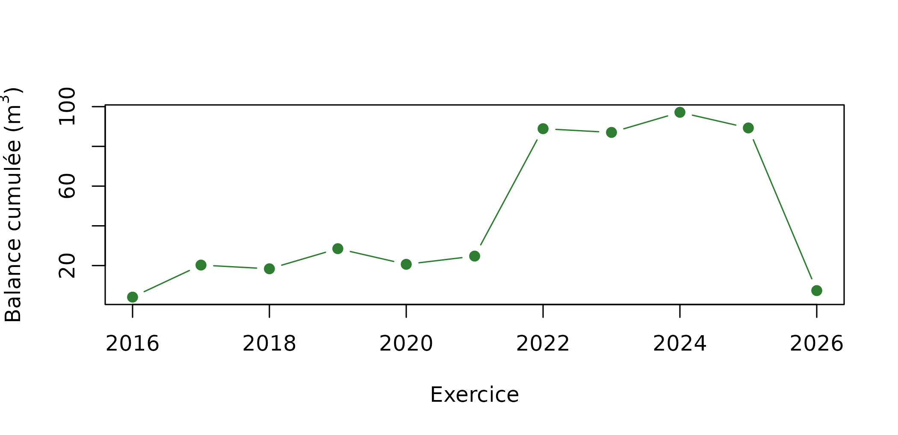

Suivre la balance de possibilité
Source:vignettes/articles/balance-possibilite.Rmd
balance-possibilite.RmdLa balance de possibilité (imprimé A50E) confronte ce que la forêt a donné à ce que l’aménagement permettait. Elle se lit en cumul, sur la durée d’un aménagement : un excès une année se compense par un déficit une autre, et un nouvel aménagement repart de zéro.
Pour qu’elle prouve quelque chose, il faut que les deux termes soient attestés : les martelages le sont, au registre 5, et la possibilité l’est aussi, au registre 1, avec l’acte qui la fixe. Cet article déroule la chaîne complète, sur le jeu de démonstration de la forêt communale de Couchey et sur une petite forêt d’exemple.
Les écritures sont fictives. Couchey est une commune réelle, mais ni son aménagement, ni ses martelages ne viennent de documents authentiques. La forêt d’exemple est inventée de toutes pièces.
L’aménagement, une écriture
Le jeu de démonstration porte l’aménagement de Couchey, transcrit d’une pièce d’archive : vingt exercices, 5 m³/ha/an sur les 16,37 ha de chênaie. La possibilité se fixe à l’hectare — c’est l’unité dans laquelle se comparent les forêts entre elles et avec l’IFN —, et le volume annuel s’en déduit.
sommier_init_schema(con)
deja <- DBI::dbGetQuery(
con, "SELECT id FROM foret WHERE nom = $1", params = list(NOM_FORET_DEMO)
)
couchey <- if (nrow(deja) > 0L) deja$id[[1L]] else
sommier_demo_couchey(con)$foret_id
tableau(DBI::dbGetQuery(
con,
"SELECT amenagement_id, annee_debut, annee_fin,
possibilite_initiale_m3_ha_an AS m3_ha_an, surface_initiale_ha AS ha,
possibilite_initiale_m3_an AS m3_an, nature_volume, repris
FROM v_amenagement WHERE foret_id = $1",
params = list(couchey)
), "L'aménagement de Couchey, au registre 1")| amenagement_id | annee_debut | annee_fin | m3_ha_an | ha | m3_an | nature_volume | repris |
|---|---|---|---|---|---|---|---|
| COUCHEY-2016 | 2016 | 2035 | 5 | 16.37 | 81.87 | possibilite | TRUE |
repris dit que l’acte a été transcrit
d’une pièce antérieure au sommier, avec sa source et un niveau de
précision supérieur à 0 : une transcription ne se fait pas passer pour
un constat.
La balance en volume
sommier_balance_possibilite() confronte, exercice par
exercice, le martelé à la possibilité, et cumule l’écart. Le prélevé est
ramené à l’hectare, dans la même unité que la possibilité.
balance <- sommier_balance_possibilite(con, couchey)
tableau(balance[, c("exercice", "possibilite_m3_ha_an", "volume_martele_m3",
"prelevement_m3_ha", "balance_cumulee_m3")],
"Balance de possibilité de Couchey")| exercice | possibilite_m3_ha_an | volume_martele_m3 | prelevement_m3_ha | balance_cumulee_m3 |
|---|---|---|---|---|
| 2016 | 5 | 86 | 5.25 | 4.13 |
| 2017 | 5 | 98 | 5.98 | 20.25 |
| 2018 | 5 | 80 | 4.89 | 18.38 |
| 2019 | 5 | 92 | 5.62 | 28.51 |
| 2020 | 5 | 74 | 4.52 | 20.64 |
| 2021 | 5 | 86 | 5.25 | 24.76 |
| 2022 | 5 | 146 | 8.92 | 88.89 |
| 2023 | 5 | 80 | 4.89 | 87.02 |
| 2024 | 5 | 92 | 5.62 | 97.15 |
| 2025 | 5 | 74 | 4.52 | 89.28 |
| 2026 | 5 | 0 | 0.00 | 7.40 |
plot(balance$exercice, balance$balance_cumulee_m3, type = "b", pch = 19,
col = "#2E7D32", xlab = "Exercice",
ylab = expression("Balance cumulée ("*m^3*")"))
abline(h = 0, lty = 2, col = "grey40")
Balance cumulée : au-dessus de zéro, un excès de prélèvement ; au-dessous, un déficit.
Changer la possibilité : un avenant
Une possibilité ne se réécrit pas : elle change par avenant, à partir d’un exercice, et les exercices antérieurs gardent la valeur qu’ils avaient. Une petite forêt d’exemple le montre — un aménagement 2018-2027 de 4 m³/ha/an sur 50 ha, ramené à 3 m³/ha/an à partir de 2022 par un avenant.
nom_exemple <- "Foret d'exemple de l'article (fictive)"
exemple <- DBI::dbGetQuery(con, "SELECT id FROM foret WHERE nom = $1",
params = list(nom_exemple))$id
if (length(exemple) == 0L) {
exemple <- foret_creer(con, nom_exemple, "domanial", surface_ha = 50)
sommier_amenagement(
con, exemple, "EXEMPLE-2018", annee_debut = 2018, annee_fin = 2027,
possibilite_m3_ha_an = 4, surface_ha = 50, autorite = "ministre",
nom_qualite = "Exemple", date_acte = "2018-01-15", auteur = "article",
reference = "Arrete d'amenagement (exemple)",
surface_regeneration_ha = 10
)
sommier_avenant_possibilite(
con, exemple, "EXEMPLE-2018", a_partir_de = 2022, autorite = "ministre",
nom_qualite = "Exemple", date_acte = "2021-12-01", auteur = "article",
reference = "Avenant n 1 (exemple)", possibilite_m3_ha_an = 3
)
unite <- ug_creer(con, exemple, "12", "2010-01-01")
DBI::dbExecute(con, paste0(
"INSERT INTO ug_geometrie (ug_uuid, version, geom, source, date_debut) ",
"VALUES ($1, 1, ST_Multi(ST_GeomFromText('POLYGON((600000 6700000, ",
"600300 6700000, 600300 6700200, 600000 6700200, 600000 6700000))', ",
"2154)), 'exemple', '2010-01-01')"), params = list(unite))
marteler <- function(annee, volume, nature, ug = NULL, surface = NULL) {
sommier_ajouter(con, sommier_entree(
foret_id = exemple, registre = 5L,
date_evenement = paste0(annee, "-10-15"), auteur = "article",
ug_uuid = ug,
payload = registre5_coupe("martelage", annee, nature, volume,
surface_ha = surface)
))
}
marteler(2016, 120, "amelioration") # avant l'amenagement
marteler(2019, 250, "amelioration")
marteler(2021, 420, "Coupe d'ensemencement", ug = unite)
marteler(2023, 90, "definitive", ug = unite)
marteler(2024, 160, "regeneration", surface = 2.5)
}
tableau(sommier_balance_possibilite(con, exemple)[
, c("exercice", "possibilite_m3_ha_an", "possibilite_m3_an",
"volume_martele_m3", "balance_cumulee_m3", "reference_acte")],
"Balance de la forêt d'exemple : l'avenant vaut à partir de 2022")| exercice | possibilite_m3_ha_an | possibilite_m3_an | volume_martele_m3 | balance_cumulee_m3 | reference_acte |
|---|---|---|---|---|---|
| 2018 | 4 | 200 | 0 | -200 | Arrete d’amenagement (exemple) |
| 2019 | 4 | 200 | 250 | -150 | Arrete d’amenagement (exemple) |
| 2020 | 4 | 200 | 0 | -350 | Arrete d’amenagement (exemple) |
| 2021 | 4 | 200 | 420 | -130 | Arrete d’amenagement (exemple) |
| 2022 | 3 | 150 | 0 | -280 | Avenant n 1 (exemple) |
| 2023 | 3 | 150 | 90 | -340 | Avenant n 1 (exemple) |
| 2024 | 3 | 150 | 160 | -330 | Avenant n 1 (exemple) |
| 2025 | 3 | 150 | 0 | -480 | Avenant n 1 (exemple) |
| 2026 | 3 | 150 | 0 | -630 | Avenant n 1 (exemple) |
La colonne reference_acte cite, pour chaque exercice,
l’acte dont vient sa possibilité. Le martelage de 2016, antérieur à
l’aménagement, ne se compare à rien : il n’est pas compté, mais il n’est
pas perdu.
tableau(sommier_martelages_hors_amenagement(con, exemple)[
, c("exercice", "nature_coupe", "volume_m3")],
"Ce qu'aucun aménagement ne couvre")| exercice | nature_coupe | volume_m3 |
|---|---|---|
| 2016 | amelioration | 120 |
La balance en surface
Les arrêtés récents de l’ONF fixent moins un volume qu’une
surface à ouvrir en régénération sur la période.
L’aménagement d’exemple en prévoit 10 ha sur dix ans.
sommier_balance_surface() compte la surface ouverte par les
martelages de régénération — une unité ne s’ouvrant qu’une fois — et
cumule l’écart au rythme régulier.
tableau(sommier_balance_surface(con, exemple)[
, c("exercice", "surface_prevue_ha", "surface_ouverte_ha",
"ecart_cumule_ha")],
"Surface ouverte en régénération")| exercice | surface_prevue_ha | surface_ouverte_ha | ecart_cumule_ha |
|---|---|---|---|
| 2018 | 1 | 0.0 | -1.0 |
| 2019 | 1 | 0.0 | -2.0 |
| 2020 | 1 | 0.0 | -3.0 |
| 2021 | 1 | 6.0 | 2.0 |
| 2022 | 1 | 0.0 | 1.0 |
| 2023 | 1 | 0.0 | 0.0 |
| 2024 | 1 | 2.5 | 1.5 |
| 2025 | 1 | 0.0 | 0.5 |
| 2026 | 1 | 0.0 | -0.5 |
La coupe d’ensemencement de 2021 ouvre toute l’unité (6 ha, faute de surface saisie) ; la coupe définitive de 2023 sur la même unité n’ouvre rien de plus ; la régénération de 2024 ouvre les 2,5 ha qu’elle déclare.
Situer la possibilité
Une possibilité est un acte d’autorité ; elle ne se juge pas. Elle se situe, par trois repères, tous hors de la chaîne :
-
le prélèvement que l’IFN observe dans la
sylvoécorégion de la forêt, en m³/ha/an.
sommier_reference_ifn()trouve la SER (couche publiée par l’IGN, téléchargée une fois) et en tire le taux avec nemeton ; -
le volume sur pied que nemeton estime par unité
(
sommier_lire_indices_nemeton()) ; -
les coupes rases que SUFOSAT détecte
(
sommier_coupes_sufosat()) : celles qu’aucun martelage n’explique sont signalées sous la balance.
reference <- sommier_reference_ifn(sommier_couche_ug(con, couchey))
reference[c("ser", "nom", "taux_m3_ha_an", "millesime")]
#> $ser
#> [1] "C20"
#>
#> $nom
#> [1] "Plateaux calcaires du Nord-Est"
#>
#> $taux_m3_ha_an
#> [1] 2.55
#>
#> $millesime
#> [1] "2005-2024"Les trois se passent au rapport, avec le reste :
sommier_rapport_quarto(
con, couchey, "gestion-anterieure.pdf", format = "pdf",
referentiel = "amenagement",
reference_ifn = sommier_reference_ifn(sommier_couche_ug(con, couchey)),
indices = sommier_lire_indices_nemeton("~/.local/share/nemeton/projects/<id>"),
coupes_detectees = sommier_coupes_sufosat("dates.tif", "proba.tif",
sommier_couche_ug(con, couchey))
)Le rapport nomme l’aménagement et l’acte, trace la balance par aménagement, met côte à côte la possibilité, le prélevé moyen et le prélèvement de l’IFN, et dit ce que la forêt porte. Ce qu’il ne fait jamais : présenter une estimation comme une écriture, ou conclure d’une détection qu’un martelage manque.